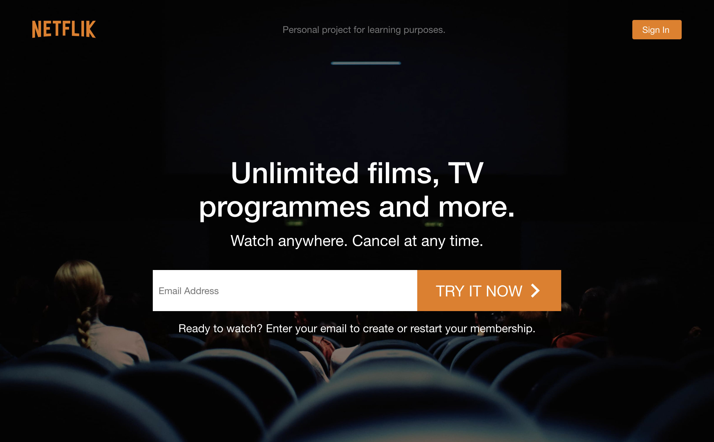

Netflik View site

This was the final project of the front-end development course. Being the largest project of the course, this project introduced application architecture, and organising the code into separate folders, while making the components as modular as possible.
Compound components were used in this project, as a way of making the code more structured and reusable. Styled components were used in place of regular CSS, allowing props to be passed down to be used in styling. Firebase was used for storing data and user authentication.
The overall process of the project was:
Throughout the course of this project, I met a bunch of obstacles. Using Firebase was confusing to me at times, like implementing the user authentication, and retrieving the stored data. So I took the time to go through some of the documentation to help me with my overall understanding of how it works.
Deploying the application onto Github Pages was another problem. Firstly, images were not showing, and I ended up discovering that the image path was the problem. Adding the environment variable to the path resolved the issue. Secondly, all the pages other than the homepage were showing 404 error on refresh. After doing a search online and asking in the Discord group for the course, I found out that Github Pages didn’t work well with React’s BrowserRouter. The workaround solutions were quite messy too. So I ended up just deploying it onto Netlify instead, and it worked like a charm.
Lastly was understanding how the entire application was structured. I find that application architecture is one of the most important things to learn. As this project was part of the course, the process was more or less smooth. But working on a large project on my own would definitely be much harder. Finishing the project made things slightly clearer for me, and I feel that this is something that only comes with more practise and experience.
Technologies Overview: